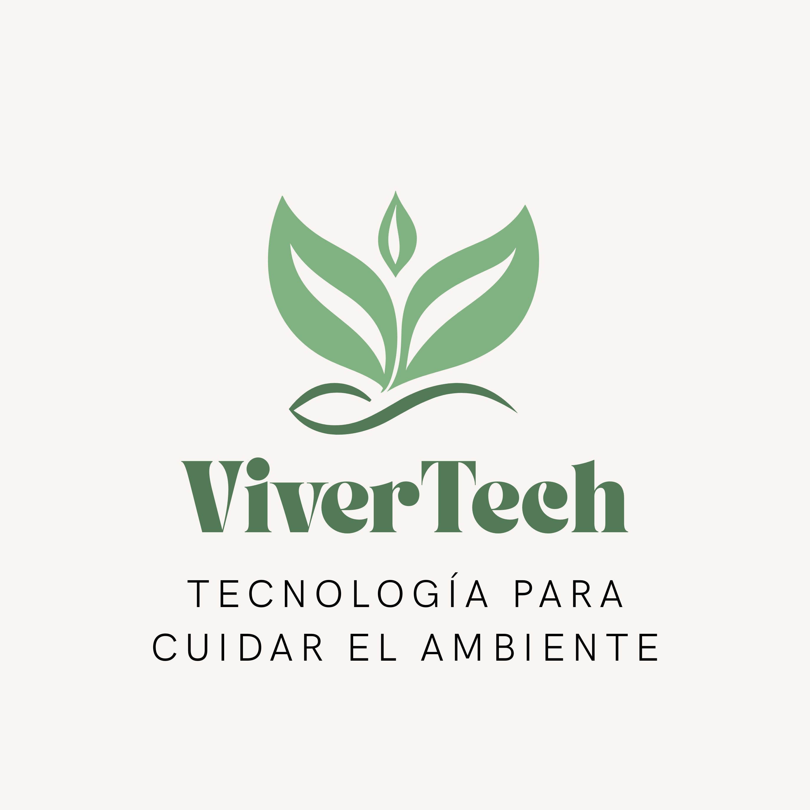

Humedad del suelo
Un sensor permite detectar cambios en la humedad y advertir cuándo conviene revisar la tierra.
TECNOLOGÍA PARA LA NATURALEZA
ViverTech monitorea la humedad del suelo y la luz ambiental para ayudar a cuidar los plantines de ciprés y lenga de la Patagonia.
Conocé el prototipo
EL DESAFÍO PATAGÓNICO
Después de los incendios forestales, viveros y brigadas comunitarias reproducen árboles nativos para recuperar los bosques. Si el sustrato se seca o la iluminación no es adecuada, los plantines pueden debilitarse.
Un sensor permite detectar cambios en la humedad y advertir cuándo conviene revisar la tierra.
Una fotoresistencia registra variaciones de luz para ayudar a controlar las condiciones del vivero.
Un semáforo indica si los valores están dentro de los límites configurados o necesitan revisión.
NUESTRO PROTOTIPO
ViverTech utiliza una placa Arduino que recibe las mediciones de los sensores, las compara con límites programados y enciende una luz de aviso. Los valores también se muestran en el Monitor Serial.
ViverTech es un prototipo educativo. Los límites deben calibrarse y el dispositivo no reemplaza la supervisión del cuidador.
Humedad del suelo + luz ambiental
Ejemplo visual del sistema de alertaPROPUESTA DE VALOR
El prototipo está en etapa de desarrollo. El precio final dependerá del costo de los sensores, la placa, la carcasa y el armado.
HABLEMOS
Escribinos para conocer el prototipo y su propuesta para el cuidado de plantines nativos.
Enviar una consultaReemplacen el correo de ejemplo por uno real del grupo, si corresponde.